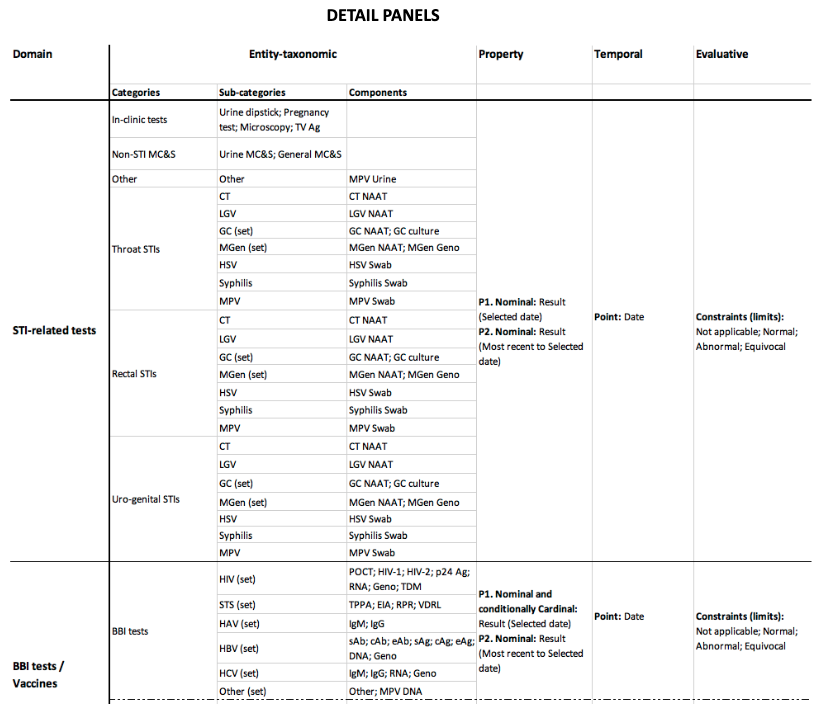
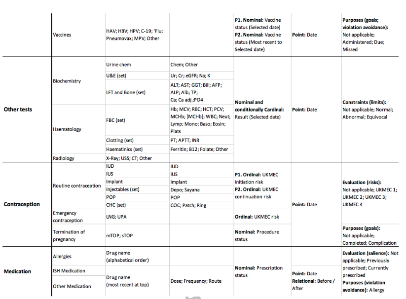
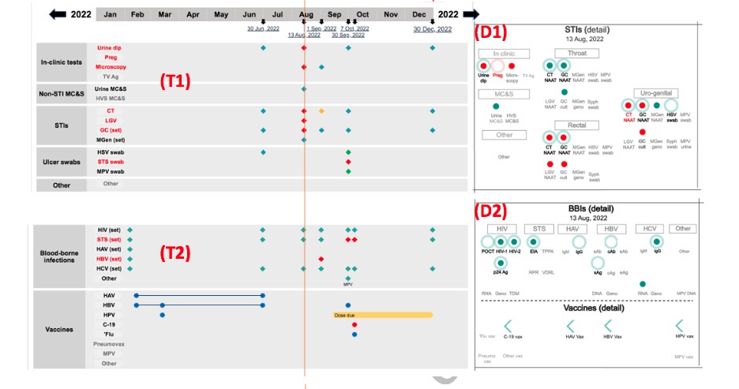

I worked together with a doctor, the subject matter expert, from January to July 2023 to bring his visual design of a dashboard displaying patients' health records to life, creating an interactive timeline visualization befitting of high dimensional medical data. This dashboard was meant to be eventually used by clinicians specialised in sexual health. The goal of the project is to transform the way medical data is currently presented, utilizing visualization techniques to represent complex information in a digestible graphical format to easily obtain insights, changes and patterns.
Click here to go directly to the interactive visualization.
The layout choice
The data shown on the UI represents test results, vaccinations, contraceptive methods and medication. The left hand section of the screen is a Summary Timeline, showing time on the x-axis and five clinical domains along the y-axis. For space efficiency, data represented in the Summary Timeline are not always fully granular - in some cases they are summarised or merged sub-categories. Adjacent (to the right) of each of the five domains of the Summary Timeline are five corresponding Detail Panels, specific to each domain and also to a selected date. All data represented in these panels are fully granular.
The Summary Timeline acts as an launch pad from which the user can explore the more granular data of the Detail Panels, as well as robust support for clinical context for the other representations.
The client required the Timeline and Detail Panel of each domain to be exactly adjacent to ensure ease of reference between them.
Before
For the five domains, to help inform the visual design, the client had categorized their 'Conceptual Dimensions': Entity-taxonomic, Property, Temporal, Evaluative
 The client then prototyped a static version
Timeline
The x-axis header shows a timeline for a year, which are divided into months. The timeline can be clicked in year increments, left (past) and right (future). Every date for which data is represented is shown as a blue hyperlink which when clicked, refreshes the dashboard instantly with updated data. A red reference line helps the clinician connect all health records logged on the same selected date, particularly useful because the five domains are spread out vertically across a distance beyond the screen height.
Detail Panels
Data is represented in categories, sub-categories and labelled glyphs. One of the challenges was implementing the complex logic of encoding and positioning the glyphs and labels, enhanced by the temporal and hierarchical nature of the data. Glyphs are customized for each domain and encoded to visualize multiple attributes of the record simultaneously. More information about each health record are shown with hover tooltips for each glyph. On click of a glyph, full information is formulated to be shown in the tooltip.
For some domains, important values are rendered on the top right corner of a glyph, instead of only been revealed when the tooltip is activated.
The 'traffic light' colors alongside a legend help clinicians intuitively identify health results. To help clinicians understand the different color encoding of labels, hover tooltips appear with custom content for each domain.
Glyphs are placed strategically on screen in specific rows and columns. Flexbox, CSS and D3.js was used to position the HTML DIV blocks into the correct coordinates on screen, while being responsive to various sreen sizes. A code snippet of how this was done is shown below.
container
.selectAll('.groups')
.data(data, (d) => d[0])
.join(
(enter) => {
// render each sub-category. widthPercs contain an array of percentage values to determine the amount of space each sub-category occupies within a detail panel
const root = enter
.append('div')
.attr('class', (_, i) => `groups group-${i}`)
.style('width', (_, i) => widthPercs[i]);
return root;
},
(update) => update
)
.append('div')
.style('display', 'flex')
.style('flex-direction', 'column')
.selectAll('.boxes')
.data(
(d) => d[1],
(d, i) => d[0] + '-' + i
)
.join(
(enter) => {
// box containing rows of glyphs for each sub-category
const root = enter
.append('div')
.attr('class', (_, i) => `boxes box-${i}`)
.style('border-radius', '8px')
.style(
'background',
'linear-gradient(to bottom right, #efefef, white)'
)
.style('margin', '6px');
root
.append('p')
.style('border-bottom', '1px solid black')
.style('padding', '2px 6px')
.style('font-weight', 'black')
.style('font-size', '14px')
.style('font-family', 'Montserrat')
.style('text-align', 'center')
.html((d) => d[0]); // sub-category title
return root;
},
(update) => update
)
.append('div')
.selectAll('.marker-group-row')
.data(
(d) => d[1],
(d, i) => d[0] + '-' + i
)
.join(
(enter) => {
// a row of glyphs for each sub-category. which row a glyph belonged to had to be specific, not random placement.
return enter
.append('div')
.attr('class', (d) => `marker-group-row marker-group-row-${d[0]}`)
.style('display', 'flex');
},
(update) => update
)
.selectAll('.marker-group')
.data(
(d) => d[1],
(d, i) => d[0] + '-' + i
)
.join(
// append marker group inside each div
(enter) => {
const root = enter
.append('div')
.attr('class', (d) => {
return `marker-group marker-group-${d[0]}`;
})
.style('display', 'flex')
.style('flex-direction', 'column')
.style('padding', '2.5px')
.style('width', window.innerWidth <= 1440 ? '33px' : '48px')
.style('height', '50px');
// append container inside each marker group to store shape and labels, necessary to do this also to resent previous css styles
const markerGroup = root
.append('div')
.style('position', 'relative')
.style('width', window.innerWidth <= 1440 ? '33px' : '48px')
.style('height', '20px');
const markers = markerGroup
.selectAll('.marker')
.data(
// filter for test result at selected date and the last test result before the selected date
(d) =>
d[1]
.filter(
(d) =>
d.timestamp &&
d.timestamp.getTime() < selectedDate.getTime()
)
.sort((a, b) => a['timestamp'] - b['timestamp'])
.slice(-1)
.concat(
d[1].filter(
(d) =>
d.timestamp &&
d.timestamp.getTime() === selectedDate.getTime()
)
),
(d) => d[outerAccessorCol] + '-' + d[innerAccessorCol]
)
.join(
(enter) => {
// render the two test results as glyphs
const markerCurrent = enter
.append('div')
.style('position', 'absolute')
.attr('class', 'marker marker-current')
.style(
'transform',
(d, i) =>
`translate(${
(window.innerWidth <= 1440 ? 45 / 4 : 55 / 4) +
(showPrevious
? (window.innerWidth <= 1440 ? 6 : 7.5) * (i + 1)
: window.innerWidth <= 1440
? 6
: 7.5) +
'px'
},0px)rotate(-135deg)`
)
.style('width', window.innerWidth <= 1440 ? '7px' : '9px')
.style('height', window.innerWidth <= 1440 ? '7px' : '9px')
.on('click', onClick)
.on('mouseover', onMouseEnter)
.on('mouseout', onMouseLeave);
markerCurrent
.filter(
(d) =>
d.timestamp &&
d.timestamp.getTime() === selectedDate.getTime()
)
.style('background-color', colorAccessorScaled);
if (showPrevious) {
markerCurrent
.filter(
(d) =>
d.timestamp &&
d.timestamp.getTime() < selectedDate.getTime()
)
.style('border-width', '2px')
.style('border-style', 'solid')
.style('border-color', colorAccessorScaled)
.style('border-left', colorAccessorScaled)
.style('border-bottom', colorAccessorScaled);
}
return markerCurrent;
},
(update) => update
);
renderHoverableLabels(root, dataset, selectedDate, 'STIs');
return root;
},
(update) => update
);
There are quirks for specific domains, which are summarized below
STI tests domain
Regarding STI-related tests, clinicians often ask the question: Was the test result normal on a specific date? Was it normal most recent to that date? Hence, it was necessary to show both test results adjacently. A diamond-shaped glyph, representing a test result on selected date, was chosen to visually match the left arrow-shaped glyph representing a previous result.
BBI tests / Vaccines domain
BBIs and Vaccines are considered together in their own shared domain because of their strong inter-relationships with each other. This is due to the availability of vaccinations for certain BBIs (HAV and HBV) and the impact of being infected by certain BBIs (in particular HIV, HBV and HCV) on the importance, dosing, scheduling and performance of other vaccines.
There was further layout customization just for this domain to arrange the BBis and Vaccines into the same card component.
Contraception & Medication domain
On the timeline, contraception and medications doses are are either represented as triangle marks or as a range with a rectangle bar. If the end date of doses exceeds the first and last date of the current year, an arrow head is attached to end(s) of the rectangle bar to visually convey continuity.
Client feedback
My client made a presentation of the final visualization to a group of other experts in the medical field and here was their response:
"They loved it so much that all 16 members unanimously agreed they want it to be the exemplar interface for all future Electronic Health Record tenders. It is going to be part of our speciality's national specification requirements - the first speciality globally that has such sophisticated, tangible requirements."